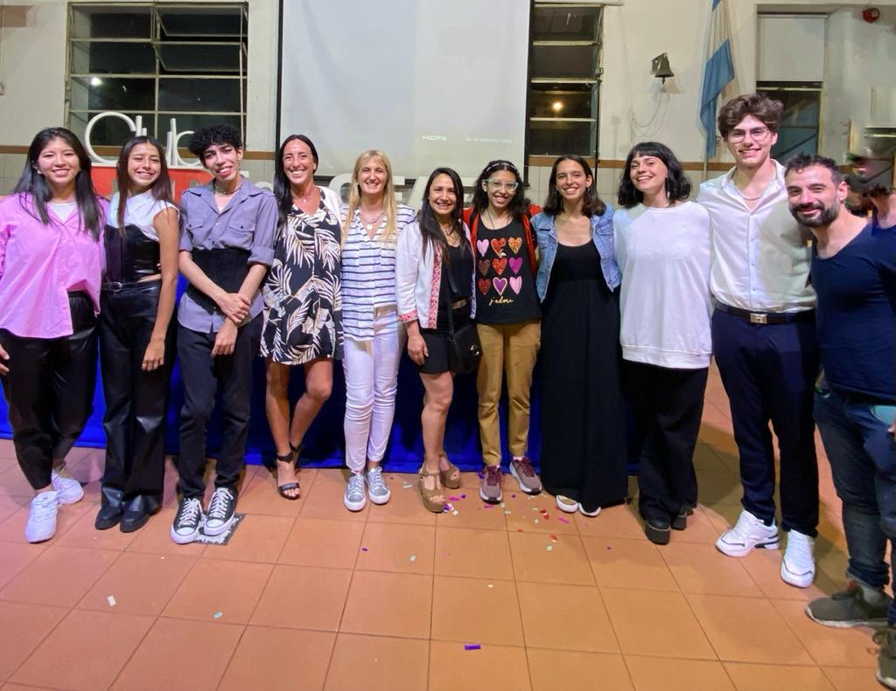
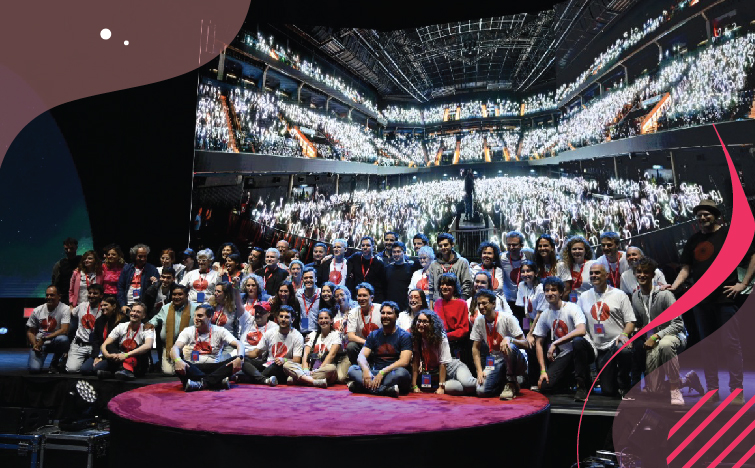

Charlas TEDed
Por Agustin Pereira y Catherine Manrique 5to A
Fue un proyecto que tomó unos meses, más de lo esperado quizás, pero que logró que muchos creemos vínculos que no teníamos y compartir experiencias, ideas y pensamientos de los que no hablaríamos habitualmente. Con los meses cada uno fue estructurando su charla y a pesar de que no todos llegamos a darla, cada uno fue parte del proceso y aportó en el mismo, aunque sea escuchando. Lo que nos generó subir al escenario, primero fueron nervios. Pero luego, al momento de contar nuestras ideas y compartir este momento con el público, todo surgió bien e hizo que sea una experiencia inolvidable para todos.
Finalmente, el evento se realizó el jueves 10 de noviembre en el CEAES a las 19:30 y se hablaron de diversos temas.
Abrió el evento Leila Cari Belizan, con su charla "Hablemos de superpoderes".
La siguió Milagros García de Olivera con "¿Y si me mirás menos?".
Continuó Catherine Manrique con su charla "Hablándole a la pared".
Máximo Arceci, con "Siempre se es responsable".
Luego, Mayra Lo Iacono con su charla "La chica diez".
La siguió María Paz de Urquiza con "El tiempo pasa y pasa todo el tiempo".
Y el cierre estuvo a cargo de Agustín Pereira con su charla "¿Cuánto pesa un arcoiris?".
Acompañaron en el proceso Brisa Villarreal, Paula Ramadori, Eluney Acosta, Sophia Herrera, Santiago Vila y Lucía Díaz.
Los encuentros estuvieron a cargo del rector de la institución Prof.Lic. Ricardo Barboza.

